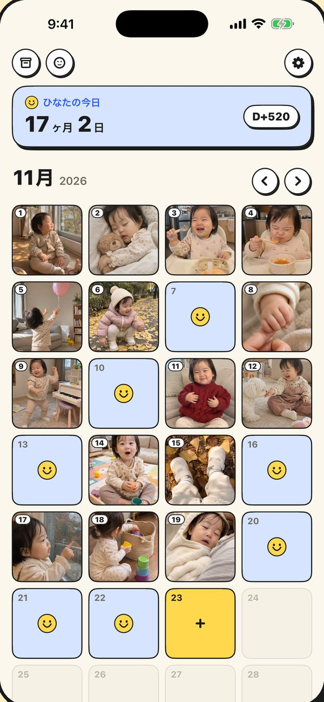
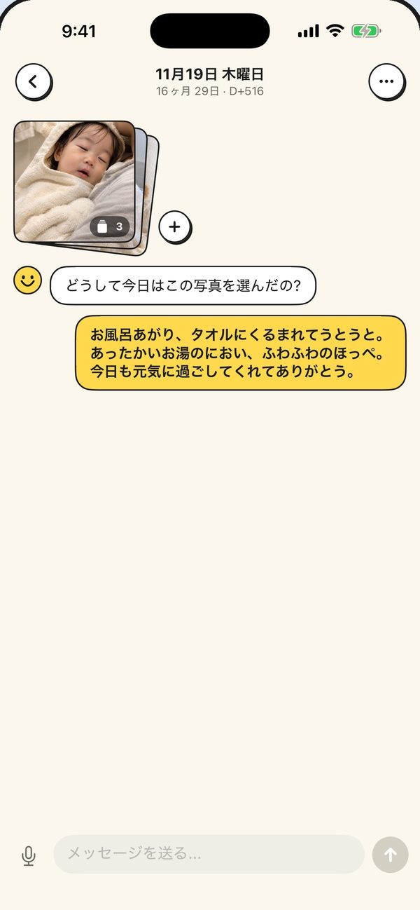
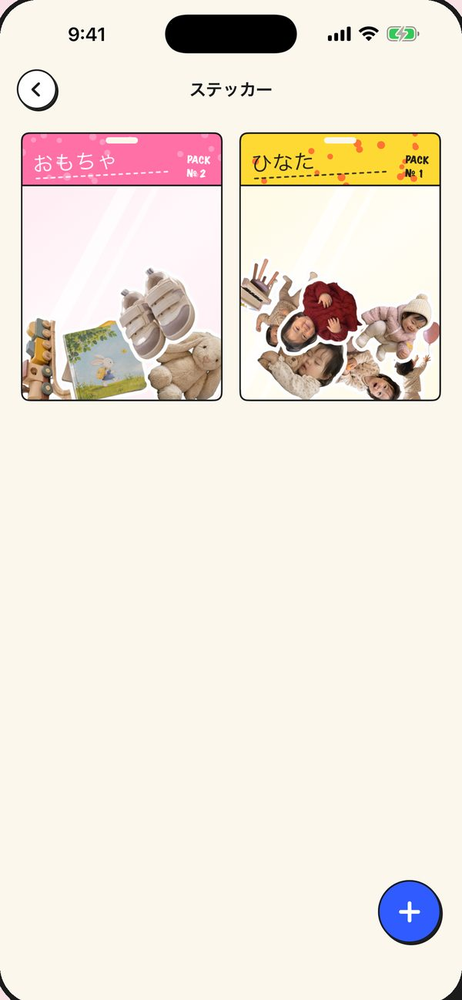
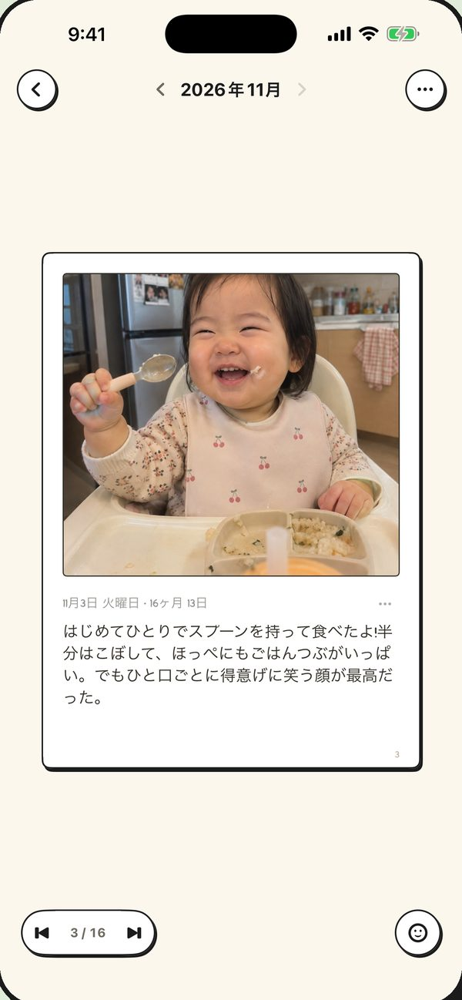
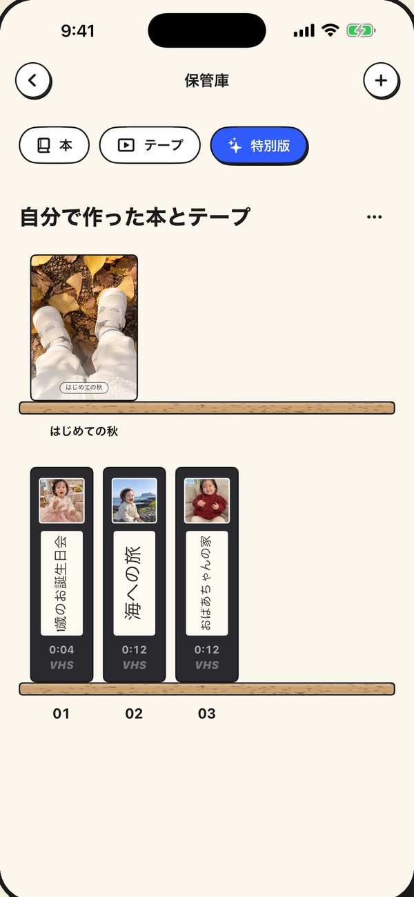
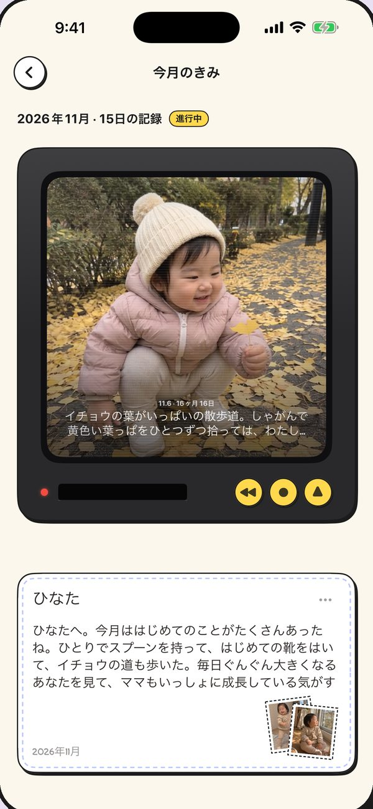
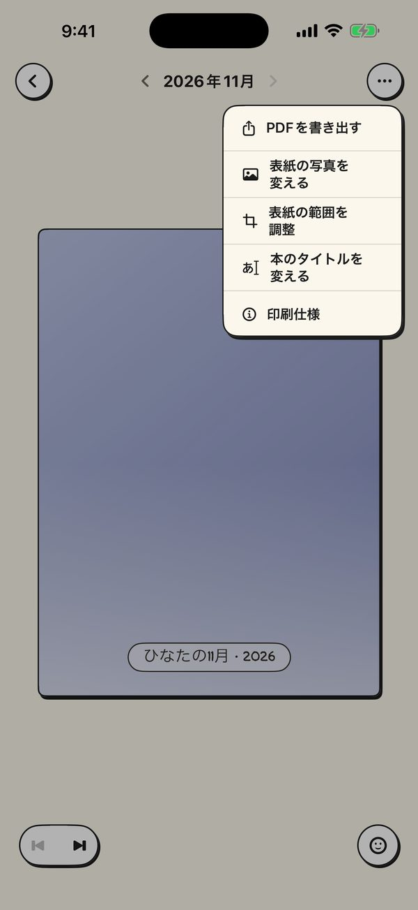

- ホームのカレンダーで、今日の黄色い + をタップします。過去の空いている日も同じです。
- その日に撮った写真が先に並びます。好きな1枚を選んで 次へ をタップします。
- 写真の範囲を合わせて 次へ をタップすると、記録の画面が開きます。
- 今日のことをひとこと書きます。忙しい日は 写真だけでも大丈夫 で写真だけ残せます。
文章はあとからでも書けます。写真だけで文章がない日は、カレンダーに小さな黄色い点が出ます。
1日1枚の写真で十分です。たまった記録は、毎月本とテープになります。
文章はあとからでも書けます。写真だけで文章がない日は、カレンダーに小さな黄色い点が出ます。

写真ごとにひとことメモ
メモは本とテープにも入ります。本の中では写真のページの … → メモを編集 で直せます。

写真を残せなかった日があっても大丈夫。空白のままにせず「この日はそのまま過ぎた日」として印をつけられます。
もとに戻すには、スマイルのマスを1回タップします。そのあと + をタップすれば、その日の記録を残せます。まだ来ていない日と、生まれる前の日には印をつけられません。
パックを開ける
袋の点線にそって、はさみを横にいちばん端までスライドするとパックが開きます。開いたシートでは、ステッカーをドラッグして動かしたり、2本の指で大きさを変えたりできます。ステッカーをタップすると、共有・メモ・削除ができます。
1つのパックにはステッカーを8枚まで入れられます。パックの … メニューから、閉じた状態と開いた状態の画像を共有できます。

ページからはがすには、ステッカーを選んで赤い ✕ をタップします。引き出しの 新しいステッカー から、その場で作って貼ることもできます。

毎月の本とテープは自動でできます。お誕生日や旅行など、特別な日だけをまとめたいときは特別版を作ります。
特別版は保管庫の 特別版 タブにまとまります。長押ししてドラッグすると並び順を変えられ、本やテープの … → 期間を変更 であとから日付を直せます。1日で作った本には、その日の写真がすべて入ります。

手紙はその月の本にも1ページとして入ります。

同じメニューで、表紙の写真・表紙の範囲・本のタイトルも変えられます。印刷に出すときは 印刷仕様 を確認してください（仕上がりサイズ 94 × 128 mm）。

iPhoneのホーム画面を長押し → 編集 → ウィジェットを追加 → Little Days を選びます。小さいウィジェットには最近の写真が、中くらいのウィジェットには月齢と最近の写真4枚が出ます。ウィジェットをタップすると、今日の記録にすぐ移動します。